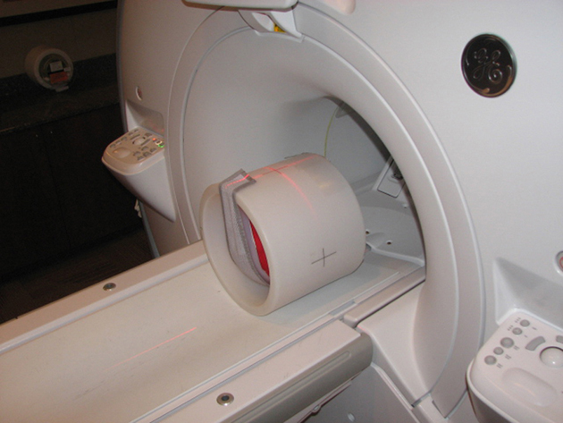
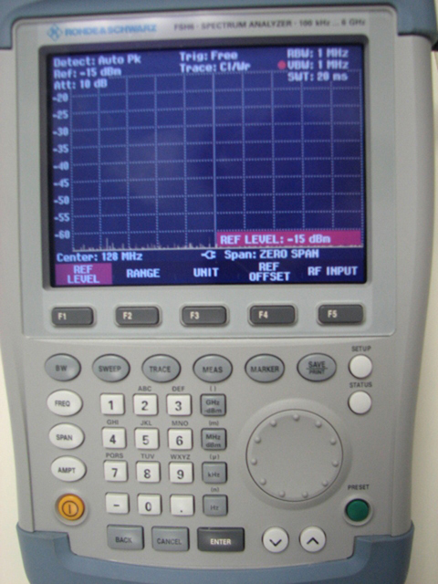
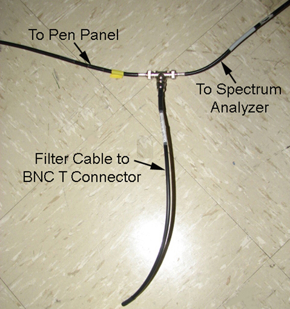
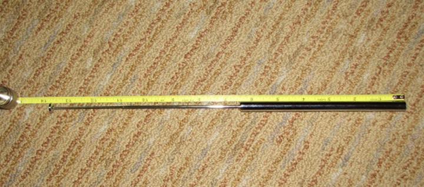
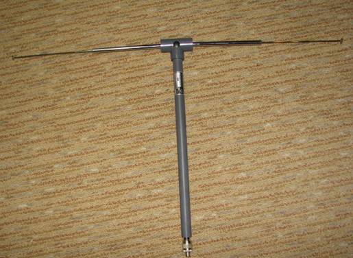
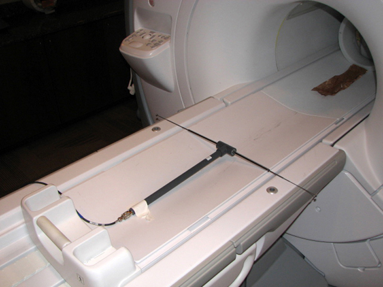
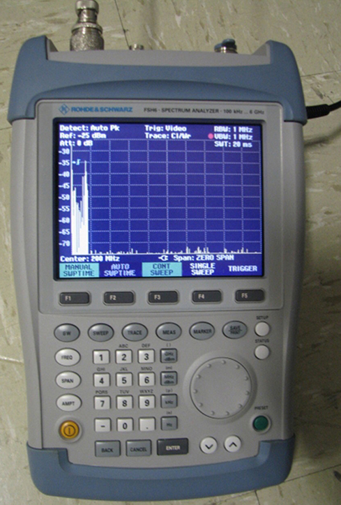

Operating Documentation
Direction 5500113, Rev# 3
Discovery MR750 3.0T Service Methods
Module Version 0.1, Version Date 6/15/10
Operating Documentation |
If soldering was not required during Body Coil replacement, this procedure is not necessary. The purpose of this test is to stress the 3.0T RF Body Coil for arcing after field tuning and capacitor replacement.
| ||||
| This procedure should only be performed by trained personnel, who have successfully completed GE Healthcare's training class for the Body Coil Stress Test. | ||||
This procedure requires the Body Coil Stress Test Kit, P/N 5401455. The test kit consists of:
Case with Custom Foam Interior for Arc Detection Service Tool Kit, P/N 5401455-10
Hand-held Spectrum Analyzer, P/N 5401455-11
Antenna, P/N 5401455-12
N Male to BNC Female RF Connector, P/N 5401455-13
BNC Female to BNC Female RF Adaptor, P/N 5401455-14
BNC Male to BNC Male RG-58 Coaxial Cable Assembly, 50 ft., P/N 5401455-15
BNC Male to BNC Male RG-58 Coaxial Cable Assembly, 1 ft., P/N 54401455-16
127.72 MHz BNC Stub Filter, P/N 54401455-17
Piezo Electric Spark Generator, P/N 54401455-18
Instructions for Body Coil Arc Detection Service Tool Kit, P/N 54401455-19
Place the Body Sphere on the cradle, landmark and [Advance to Scan].
Illustration 1: Phantom Setup

If possible, position the Spectrum Analyzer near the Operator Console.
Refer to the illustration below, and program the Spectrum Analyzer as follows:
Illustration 2: Spectrum Analyzer Setup

Plug the power adaptor into the proper outlet and into the right side of the Spectrum Analyzer.
Turn the power on by pressing the yellow button on lower left side of the Analyzer.
Set the frequency to 200 Mhz: Press [FREQ], type 200 using the keypad, press [MHz dBm] and [ENTER].
Set the frequency span: Press [SPAN], type 0, and press [ENTER].
Set the Range: Press [AMPT], [F2], either the up [^] or down [v] button to obtain 5 dB/DIV, and press [ENTER].
Set the Ref Level: Press [AMPT], [F1], [–] (minus), type 2 and 5 and press [ENTER].
Set the Resolution: Press [BW], [F1], [MHz] and [ENTER].
Set the Video: Press [BW], [F3], type 1, press [MHz] and [ENTER].
Set the Sweeptime: Press [SWEEP], type 2 and 0, press [ENTER].
Set the Detector: Press [TRACE], [DETECTOR], press either the up [^] or down [v] button for Auto Peak, and press [ENTER].
Set the Trigger: Press [SWEEP], [F5], press either the up [^] or down [v] button to select Video, type 8 and 0, and press [ENTER].
Make the following connections:
Illustration 3: Spectrum Analyzer Connections

Connect the port labeled RF Input to a short BNC Cable.
Connect the Filter Cable to the BNC T Connector.
Connect the other side of the BNC T Connector to the BNC Cable.
Attach the other end of the BNC Cable to an open BNC Connector on the Pen Panel.
Adjust the two individual dipoles to 13-5/8 in. (34.6 cm) in length.
Illustration 4: Dipole Adjustment

Install the two dipoles into the antenna base.
Illustration 5: Dipoles Installed in Antenna

Place the antenna on the table, and tape the antenna to the table since there is a slight magnetic pull on the antenna.
Illustration 6: Antenna Placement

Run a BNC Cable between the antenna and the BNC port on the Pen Panel connected to the Spectrum Analyzer.
Set up a scan as follows:
Select New Patient with geservice for the Patient ID.
Type 300 for the Weight (Lb), and press [Enter].
Select [Show All Protocols...], and [Service]. Next, select [apbcal], the center arrow, and press [Accept].
d. Select [Start Scan].
Select Research Options from the drop-down menu next to the Scan button. Change the following:
Calmode = 2
p2 = 2850
t2 = 50000
On the pull-down Research menu, select Download.
On the Scan drop-down list, select Manual Prescan.
Increase TG to 175.
To verify the Spectrum Analyzer and equipment are set up properly:
Place the black box into the Magnet Bore, and push down on the what? button.
Review the output on the Spectrum Analyzer. If the equipment is set up properly, there should be noise on the display.
Press [Done] to exit the Manual Prescan upon completion.
Illustration 7: Spectrum Analyzer Review

To clear the Spectrum Analyzer, select [F5] or Trigger, [Free Run], press [ENTER], select F5 or Trigger, then select [Video], then select [enter].
From the Scan drop-down list, select Manual Prescan.
Allow Manual Prescan to run for 15 minutes.
If there are no spikes that are 40 dB above the Noise floor, the coil is satisfactory. Example: If Noise floor is -73 dB, a spike must be more positive than -33 dB to fail.
If there are spikes above the Noise floor, remove the coil and inspect for arcing. Resolve the arcing issue and repeat this test.
Proceed to Uniformity Test.